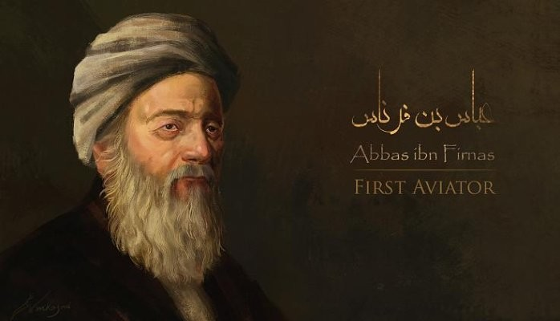
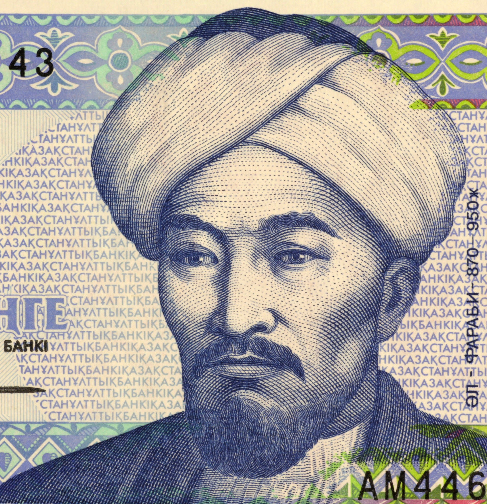

MY WEBSITE
Real Heroes Of Islamic World


Abu al-Qasim Abbas ibn Firnas ibn Wirdas al-Takurini, known as Abbas ibn Firnas was an Andalusi polymath: an inventor, astronomer, physician, chemist, engineer, Andalusi musician, and Arabic-language poet. He was reported to have experimented with unpowered flight.
Abu Nasr Muhammad al-Farabi, known in the Latin West as Alpharabius, was an early Islamic philosopher and music theorist. He has been designated as "Father of Islamic Neoplatonism", and the "Founder of Islamic Political Philosophy".
Hasan Ibn al-Haytham was a medieval mathematician, astronomer, and physicist of the Islamic Golden Age from present-day Iraq. Referred to as "the father of modern optics", he made significant contributions to the principles of optics and visual perception in particular.